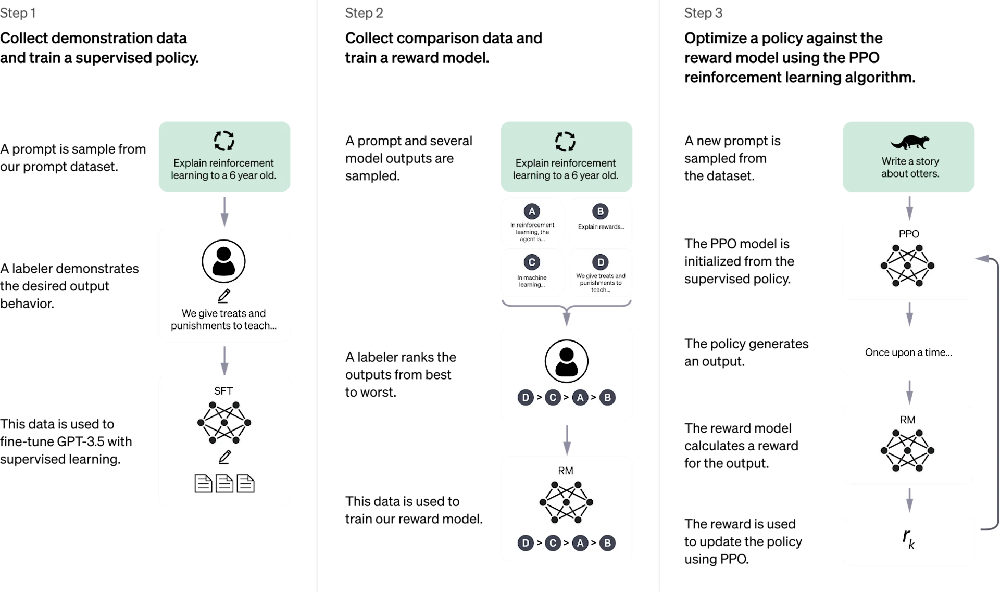

March 21, 2025 Product
Introduction To Javus
We trained this model using Reinforcement Learning from Human Feedback (RLHF), using the same methods as InstructGPT, but with slight differences in the data collection setup. We trained an initial model using supervised fine-tuning: human AI trainers provided conversations in which they played both sides—the user and an AI assistant. We gave the trainers access to model-written suggestions to help them compose their responses. We mixed this new dialogue dataset with the InstructGPT dataset, which we transformed into a dialogue format.
